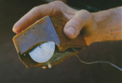

History
A computer mouse (plural mice or mouses) is a hand-held pointing device that detects two-dimensional motion relative to a surface. This motion is typically translated into the motion of a pointer on a display, which allows a smooth control of the graphical user interface. The first public demonstration of a mouse controlling a computer system was in 1968.
The earliest known publication of the term mouse as referring to a computer pointing device is in Bill English's July 1965 publication, "Computer-Aided Display Control" likely originating from its resemblance to the shape and size of a mouse, a rodent, with the cord resembling its tail.
The trackball, a related pointing device, was invented in 1946 by Ralph Benjamin as part of a post-World War II-era fire-control radar plotting system called Comprehensive Display System (CDS). Benjamin was then working for the British Royal Navy Scientific Service. Benjamin's project used analog computers to calculate the future position of target aircraft based on several initial input points provided by a user with a joystick. Benjamin felt that a more elegant input device was needed and invented what they called a "roller ball" for this purpose.
In 1964 Engelbart build the first mouse prototype.They christened the device the mouse as early models had a cord attached to the rear part of the device which looked like a tail, and in turn resembled the common mouse. As noted above, this "mouse" was first mentioned in print in a July 1965 report, on which English was the lead author.
By 1982, the Xerox 8010 was probably the best-known computer with a mouse. That same year Microsoft made the decision to make the MS-DOS program Microsoft Word mouse-compatible, and developed the first PC-compatible mouse. Microsoft's mouse shipped in 1983, thus beginning the Microsoft Hardware division of the company.However, the mouse remained relatively obscure until the appearance of the Macintosh 128K (which included an updated version of the Lisa Mouse) in 1984, and of the Amiga 1000 and the Atari ST in 1985.